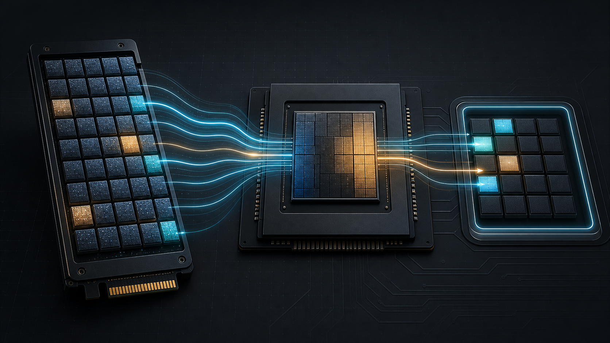
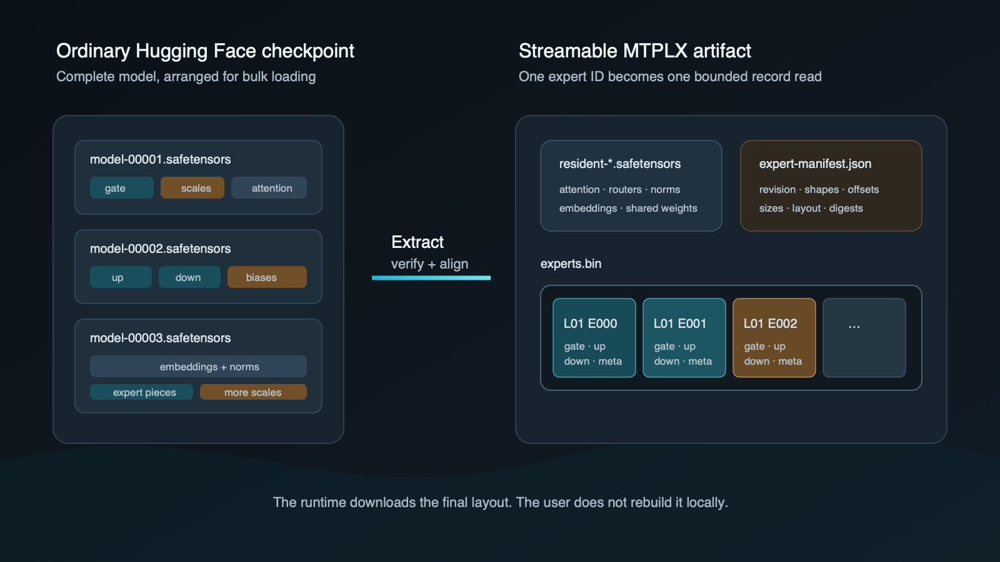
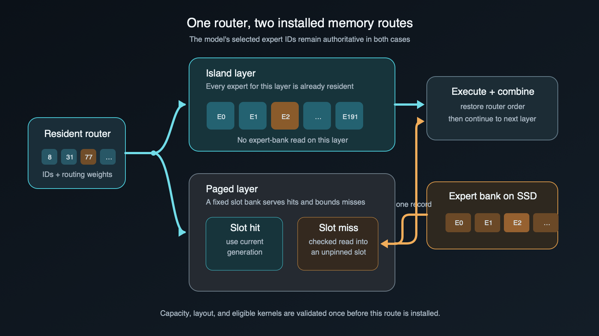

David Tai, OpenSource.WTF
moe-streaming-hero.png
At OpenSource.WTF, I had been trying to run mixture-of-experts models whose full working set would not fit within a Mac's memory budget. My first plan was to leave the routed experts on SSD and bring one into memory only after the router selected it.
MoE made that idea plausible. A dense model needs nearly all of its feed-forward weights for every token. An MoE router selects only a few experts at each sparse layer. If the other experts were idle, I did not see why they all had to remain in memory.
The first Hy3 version proved SSD streaming worked, but every user still had to
convert the checkpoint into a second expert bank before the first prompt. We
removed that step by making (layer, expert) a direct address in the published
checkpoint: one complete record, already in the layout the runtime needs.
That decision shaped the system: an expert-major binary bank, a manifest defining every record, and fixed paging slots. Machines with more memory can pin the same records in layer-sized islands.
The full-resident Hy3 configuration reached 48.04 decode tok/s. Smaller memory plans page the same published expert bank from SSD without asking the user to rebuild the model first.
The two prepacked models are:
They pair with OpenSourceWTF/mtplx-moe,
our fork of Youssof Altoukhi's MTPLX.
Why I started with MoE
Hy3 made the opportunity unusually large. Tencent describes it as a 295-billion-parameter model with 21 billion active parameters. It has 192 routed experts and activates eight of them in each sparse layer.
The 295 billion parameters describe the model's total capacity. The 21 billion active parameters describe the work for one token. That gap was the opening for streaming.
This does not mean the whole expert path can be predicted at the start of a token. Layer 32 cannot route until layer 31 has produced its output. The valid order is still:
attention -> router -> selected expert IDs -> expert MLPs -> combine -> next layer
What changes is where the selected expert MLP weights come from. Some may already be resident. A missing one can come from a fixed slot backed by SSD. The router remains authoritative either way.
For the current Hy3 package, the full tested snapshot is about 97.6 GB of
logical files. Its routed expert bank, experts.bin, is 80,518,053,888 bytes.
That is large for a download. It is a different problem from requiring all of
those bytes, plus the rest of the process, to stay in unified memory at once.
The runtime worked. The checkpoint was still wrong
Safetensors is not the problem. It is a good, inspectable container with a bounded header and explicit tensor offsets. The problem is the physical question the container was arranged to answer.
A normal model load asks:
Where are all the tensors needed to construct this model?
An SSD-streamed MoE layer asks:
Where are all the components for expert 77, and can I place them directly into the slot Metal will read?
In the source checkpoints we started from, an expert's gate, up, and down projections—and their quantization scales and biases—lived in separate component-major tensor regions. One logical expert was a set of slices across those regions, sometimes across checkpoint shards. Reading it directly meant several positional reads, assembly work, and more opportunities to create temporary memory.
That layout is fine when the loader will materialize every tensor. It is a poor random-access database for a router emitting expert IDs one layer at a time.
That is why the first Hy3 setup needed its conversion step. I could not page the source checkpoint directly, so I extracted its experts into a second layout that the runtime could address. The converted bank solved the read problem and created the installation problem.
We rebuilt the checkpoint around the router
checkpoint-to-expert-bank.png
The published checkpoint turns the source layout inside out:
- Tensors used throughout inference—attention, routers, embeddings, norms, shared weights, and the output path—remain in resident safetensors shards.
- Every routed expert becomes one aligned, expert-major record in a serialized bank.
- An authoritative manifest records the model key, source provenance, tensor shapes, record offsets and lengths, storage layout, file sizes, and digests.
- The complete repack is verified before publication.
experts.bin is a sequence of fixed records. The manifest defines their order,
geometry, and meaning. MTPLX can resolve a (layer, expert) pair to one offset
and length without searching tensor names or assembling slices.
The Hugging Face repository contains the resident tensors and expert bank, not
a second copy of the original expert safetensors. mtplx pull or
mtplx serve --download retrieves the layout the runtime consumes. No source
checkpoint or local repack is required.
Why the manifest had to be part of the model
If a streamed record is wrong, the model might not fail until the router selects it. MTPLX therefore checks the model key, record geometry, codec, immutable Hugging Face revision, bank length, and SHA-256 digest before constructing the model. Any mismatch stops startup.
A successful admission writes a revision- and digest-bound receipt outside the immutable Hugging Face snapshot. Later launches can reuse that receipt instead of hashing the 80.5 GB bank again.
Once the artifact, shapes, memory plan, and kernel route have passed that construction boundary, the production path executes them directly. It does not re-prove invariant model metadata on every token.
How we kept paging bounded
Making an expert addressable solved the storage problem. It did not, by itself, put a ceiling on memory. If every cache miss could allocate another buffer, the runtime would gradually recreate the working set I was trying to avoid. We therefore install the memory plan before generation and give every paged layer a fixed number of slots.
The model keeps its router and common trunk resident. At each routed layer, the router produces expert IDs and weights in the model's original order. The runtime resolves each ID through one of two routes installed at construction.
An island holds every routed expert for one transformer layer in unified memory. That layer never needs an expert-bank read during generation.
A paged layer has a fixed bank of component slots. A hit uses the current resident slot. A miss issues a checked positional read for the selected record into an available persistent or transient slot. The slot has a generation and a pin: storage cannot overwrite it until the final Metal command using that generation has completed.
islands-and-paging.png
Persistent and transient slot counts are fixed before the model is installed. A cache miss may replace an eligible slot, but it cannot grow the cache or create a second copy of the expert corpus.
After the selected experts execute, their outputs are restored to the router's original assignment order and combined with the original routing weights. Whether an expert was an island hit, a slot hit, or an SSD miss must not change the arithmetic.
On Apple Silicon, CPU and GPU work share unified memory. The native reader can fill stable MLX buffers that Metal will consume. A miss still pays SSD latency, but it does not add a separate CPU-to-VRAM copy.
Why we added islands
Paging made the model fit, but an SSD miss still stalls the layer that needs the record. I did not want a Mac with more memory to pay the same storage cost as a smaller machine. Islands were the answer: keep every routed expert for a layer resident, and page only the layers that do not fit within the selected plan.
Hy3 ships three promoted memory profiles:
| Profile | Process ceiling | Expert placement | Resident trunk |
|---|---|---|---|
hy3-oq2e-64 |
71 GiB | 0 islands; 49.992 GiB frequency cache | q4 |
hy3-oq2e-88 |
95 GiB | 74 islands; 5 streamed layers; 2 GiB cache | q8 |
hy3-oq2e-96 |
103 GiB | all 79 routed layers in islands | q8 |
The number in the profile name is the weight envelope, not the amount of RAM the machine contains. Each process ceiling includes a 7 GiB runtime reserve, and all three promoted profiles cap aggregate live KV at 4,096 tokens.
With --expert-profile auto, the fork chooses the largest promoted profile
that fits both installed memory and memory available at launch. If you select a
profile by name, startup runs the same preflight and fails clearly if it does
not fit. It does not quietly downgrade.
All three profiles use the same checkpoint. The 64 GiB envelope pages every routed layer. The 88 GiB envelope pages five. The 96 GiB envelope keeps all 79 in islands and does not read the bank during steady decode.
The profiles are capacity plans, not competing headline benchmarks. The flagship uses the all-island geometry, then requantizes the resident trunk to q4 and runs MTP at depth 1. The appendix retains the separate profile measurements without mixing their protocols into the main result.
The q4 setting changes the resident trunk, not the expert bank
The published checkpoint keeps its resident trunk in q8. To test q4 without publishing another checkpoint or touching the 80.5 GB expert bank, we used a small configuration overlay:
{
"proj_requant": "q4"
}
At model construction, that setting converts supported resident q8 *_proj
matrices to q4 with group size 64. It does not change experts.bin, router
gates, embeddings, the language-model head, norms, or biases.
We called this dynamic requantization because it is applied to a downloaded checkpoint at startup rather than baked into another release. It is not dynamic during generation. Once construction finishes, the installed route uses the q4 arrays directly; there is no per-token precision check or q8 fallback in the measured path.
Our retained flagship receipt used an M5 Max with 128 GB of unified memory, all 79 expert layers pinned as islands, BF16 KV, a 1,024-token real-code context, 256 generated tokens, and MTP depth 1. Across three runs it averaged 48.04 decode tokens per second, against 41.36 tok/s for its matched AR control.
We also ran the complete 164-task HumanEvalPlus suite. The q4 resident-trunk
configuration passed 142/164 (86.6%). The q8 control passed 143/164
(87.2%). McNemar's exact two-sided test was p=1.0; this comparison did not
show a directional quality difference.
This is a full-resident result. It measures the q4 trunk setting and the top end
of the island system, not SSD-miss speed. It is also a retained MTP benchmark,
not throughput from the current AR-only mtplx serve route.
We also ran the q4 overlay with two smaller memory plans. To keep that comparison controlled, all three plans used the same 320-token code prompt, generated 256 tokens, and retained three repetitions in both AR and MTP depth 1:
| q4 benchmark plan | Process ceiling | Expert placement | AR decode | MTP D1 decode |
|---|---|---|---|---|
| 64 GiB envelope | 71 GiB | no islands; 49.992 GiB cache | 9.17 tok/s | 10.78 tok/s |
| 80 GiB envelope | 87 GiB | 69 islands; 10 paged layers | 21.16 tok/s | 22.32 tok/s |
88e, full resident |
96 GiB | all 79 layers in islands | 43.31 tok/s | 47.65 tok/s |
The rows above are the requant benchmark plans, not the q8 promoted profile names in the preceding section. The controlled sweep shows the cost of paging as the memory budget shrinks. Its full-resident mean is 47.65 tok/s because it used the shared 320-token protocol. The longer 1,024-token arm above remains the 48.04 tok/s result.
The appendix includes every repetition from both q4 benchmarks and the complete HumanEvalPlus receipts.
GLM-5.2 needs a different expert-bank format
The GLM package is about 187 GiB on disk. Its
experts-q1-t158.bin alone is 169,869,312,000 bytes and stores ternary expert
weights with group scales. Hy3's affine dense-island kernels cannot interpret
that representation, so the GLM route does not support Hy3's island settings.
Its measured configuration keeps 75 layers on bounded paging instead.
Contiguous records are not a universal expert format. The codec and record geometry still have to match the execution kernel.
In the retained 96 GiB lane, a 72 GiB expert cache held 116 slots per streamed layer. Two 1,024-input/1,024-output runs averaged 5.33 tok/s in AR and 5.93 tok/s at MTP depth 3. The MTP lane used a separate Q4 layer-78 draft head. It is benchmark evidence, not a mode exposed by the current AR-only server.
The t158 conversion is also lossy. It has construction-time numeric checks, but we do not yet have a task-quality receipt for it: no HumanEval, MBPP, or perplexity result. We are publishing it as a runtime engineering artifact, not recommending it as a quality-preserving GLM release.
Downloading Hy3 without the conversion step
OpenSourceWTF/mtplx-moe is our
fork of MTPLX. It is not on PyPI and retains upstream's mtplx distribution,
import, and CLI names, so install it in a dedicated environment:
MTPLX_MOE_VENV="$HOME/.venvs/mtplx-moe"
python3 -m venv "$MTPLX_MOE_VENV"
"$MTPLX_MOE_VENV/bin/python" -m pip install --upgrade pip
"$MTPLX_MOE_VENV/bin/python" -m pip install \
"mtplx @ git+https://github.com/OpenSourceWTF/mtplx-moe.git@main"
"$MTPLX_MOE_VENV/bin/python" -m pip check
"$MTPLX_MOE_VENV/bin/mtplx" --version
The version must contain +opensourcewtf.moe. If it does not, stop there: you
are not running this fork. Use the venv's absolute mtplx path as shown,
especially if upstream MTPLX, its Homebrew install, or its Mac app is also on
the machine.
Hy3 can download and launch in one command:
"$MTPLX_MOE_VENV/bin/mtplx" serve \
--model OpensourceWTF/Hy3-oQ2e-MTPLX-streaming \
--download
That selects the largest promoted profile that passes preflight. After startup, check which route was constructed:
curl -fsS http://127.0.0.1:8000/health | python3 -m json.tool
curl -fsS http://127.0.0.1:8000/v1/models | python3 -m json.tool
The current streamed serving route is AR-only. The exact commands for named Hy3 profiles, q4 resident-trunk overlays, the measured GLM configuration, and OpenAI-compatible clients live in the fork's SSD-streamed MoE guide.
The storage format is part of the runtime
The router tells MTPLX which expert comes next. The checkpoint turns that decision into one bounded read. The manifest proves that the bytes belong to the model, the memory plan provides a fixed destination, and slot ownership keeps the record alive until Metal is finished.
The 48.04 tok/s result does not come from making SSD misses free. The flagship keeps all 79 routed layers resident. The streaming checkpoint matters because the same published artifact can also run under smaller memory plans without a local conversion or a second copy of the expert weights.
experts.bin is therefore the storage layout of the routed model, not a cache
each user derives after downloading it. The first Hy3 version asked every user
to rebuild that layout. Publishing it directly is what made “download the model
and run it” an honest instruction.
Appendix: the receipts behind the numbers
The appendix preserves the retained results cited in this article. The linked JSON files contain the complete receipts rather than only the rounded claims below.
Hy3: AR and MTP
| Profile | Repetitions | AR decode | MTP D1 | MTP D2 | MTP D3 | Receipt |
|---|---|---|---|---|---|---|
hy3-oq2e-64 |
3 | 9.31 | 11.59 | 11.15 | 9.63† | promotion receipt 14c8b57 |
hy3-oq2e-88 |
1 | 22.35 | — | 25.93† | 22.15 | JSON |
hy3-oq2e-96 |
1 | 30.17 | — | 36.82† | 31.81 | JSON |
All figures are decode tok/s. The 64 GiB values are three-run means; its AR repetitions were 9.24, 9.39, and 9.30 tok/s. D1 and D2 retained token parity. D3 diverged from the AR reference at token 805. In the single-run 88 and 96 GiB receipts, D2 had one divergence from the corresponding AR reference; D3 retained token parity.
The installed 64 GiB profile uses the same zero-island, cache-heavy geometry but caps live KV at 4,096 tokens and has a 71 GiB process ceiling. The retained 64 GiB performance receipt used a 16K-KV ceiling and a 74.75 GiB process ceiling. The 88 and 96 GiB results used the installed 4K ceiling. These numbers should not be used to calculate a controlled percentage gain between profiles.
Hy3: startup q4 requantization
The full-resident arm of record used q4/gs64 resident projections, the unchanged oQ2e expert bank, all 79 islands, BF16 KV, a 1,024-token real-code prompt, and 256 generated tokens on an M5 Max with 128 GB of unified memory.
| Repetition | AR decode | MTP depth 1 decode | Accepted drafts per verify | Token parity |
|---|---|---|---|---|
| 1 | 41.37 tok/s | 47.45 tok/s | 0.8984 | yes |
| 2 | 41.35 tok/s | 48.64 tok/s | 0.8984 | yes |
| 3 | 41.37 tok/s | 48.04 tok/s | 0.8984 | yes |
| Mean | 41.36 tok/s | 48.04 tok/s | 0.8984 | yes |
The compact JSON receipt records the exact values, hardware, configuration, source commit, and hashes of the three source receipts.
This table compares AR and MTP on the same q4 route; it is not a q4-versus-q8 speed comparison.
The second q4 benchmark used one 320-token code prompt across three memory plans. Each cell below is a complete 256-token generation. All MTP D1 runs retained token parity with their paired AR reference.
| q4 plan | AR repetitions | AR mean | MTP D1 repetitions | D1 mean |
|---|---|---|---|---|
| 64 GiB envelope | 9.98, 8.70, 8.83 | 9.17 tok/s | 10.63, 10.56, 11.16 | 10.78 tok/s |
| 80 GiB envelope | 21.22, 21.13, 21.13 | 21.16 tok/s | 22.47, 22.27, 22.23 | 22.32 tok/s |
88e, full resident |
43.28, 43.35, 43.30 | 43.31 tok/s | 49.24, 48.47, 45.23 | 47.65 tok/s |
The attached compact JSON contains every repetition, the exact means, the shared protocol, source paths, source commit, and SHA-256 hashes of all nine raw receipts.
The quality comparison used HumanEvalPlus:
| Resident trunk | Coverage | Passed | pass@1 | Complete receipt |
|---|---|---|---|---|
| q8, initial smoke | 20 tasks | 19 | 95.0% | JSON |
| q4, initial smoke | 20 tasks | 19 | 95.0% | JSON |
| q8, full suite | 164 tasks | 143 | 87.2% | JSON |
| q4, full suite | 164 tasks | 142 | 86.6% | JSON |
The 20-task runs were smoke tests and are superseded by the full suite. The 164-task runs used HumanEvalPlus v0.1.10, one sample per task, greedy decoding, temperature 0, seed 42, and the chat endpoint. Both completed without request errors. The paired exact McNemar result for q4 against q8 was p=1.0.
GLM-5.2: AR and MTP
| Expert cache | Repetitions | AR decode | AR mean | MTP D3 decode | D3 mean |
|---|---|---|---|---|---|
| 54 GiB control | 2 | 4.50, 4.46 tok/s | 4.48 tok/s | 4.93, 5.04 tok/s | 4.99 tok/s |
| 72 GiB measured plan | 2 | 5.39, 5.26 tok/s | 5.33 tok/s | 5.91, 5.96 tok/s | 5.93 tok/s |
Both arms used the t158 expert bank, 75 streamed layers, a 96 GiB process ceiling, a 12 GiB reserve, 48 transient slots, a Q4 layer-78 MTP head, a 1,024-token input, and 1,024 generated tokens. The second pair reversed arm order. All benchmark gates passed, and the 72 GiB AR and D3 rows produced the same token hash.
The complete GLM JSON receipt contains the per-run throughput, cache hit rates, miss counts, peak memory, and quality boundary. Its token parity is internal to the t158 artifact. Because t158 is lossy relative to the source Q2 weights and has no task evaluation, these figures are throughput claims, not evidence of preserved GLM quality.
The implementation, installation notes, and retained receipts are in
OpenSourceWTF/mtplx-moe. The
fork builds on MTPLX and
MLX.